WinLine Server Dienst
Um den Serverdienst des WinLine Servers zu starten bzw. zu stoppen kann der "Mesonic WinLine Service Manager" verwendet werden. Dieser kann im EWL Verzeichnis durch Ausführen der Datei "mesosvcwnd.exe" gestartet werden. Dadurch wird das "EWL Mesonic Service Manager"-Symbol im Tray angezeigt.
Achtung: Damit der WinLine Server über dieses Tray Icon gestartet werden kann ist es notwendig, dass der Dienst "Mesonic WinLine Service Manager" vorhanden bzw. installiert ist.
Durch Anwählen des "Mesonic WinLine Service Manager"-Symbols mit der rechten Maustaste kann der WinLine Server (sowie der Mesonic WinLine Service Manager Dienst) gestartet bzw. beendet werden, oder es können die Server Infos angezeigt werden:
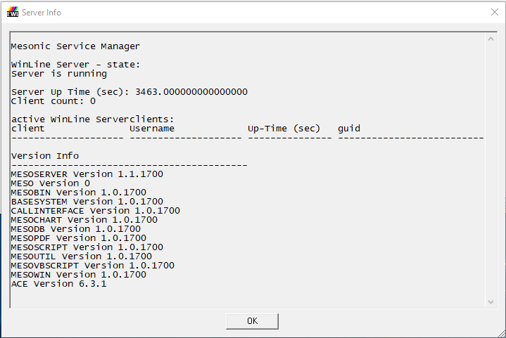
Ø
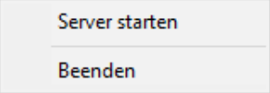
Server startenMit diesem Eintrag wird der WinLine Server inkl. Mesonic WinLine Service Manager gestartet.
Ø
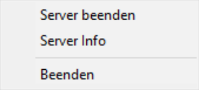
Server beendenDurch Anwählen dieses Eintrages wird der WinLine Server inkl. zugehörigem Dienst (Mesonic WinLine Service Manager) beendet. D.h. nicht nur der WinLine Server wird dabei gestoppt, sondern es wird immer der Service mit gestartet bzw. gestoppt, der automatisch den WinLine Server startet.
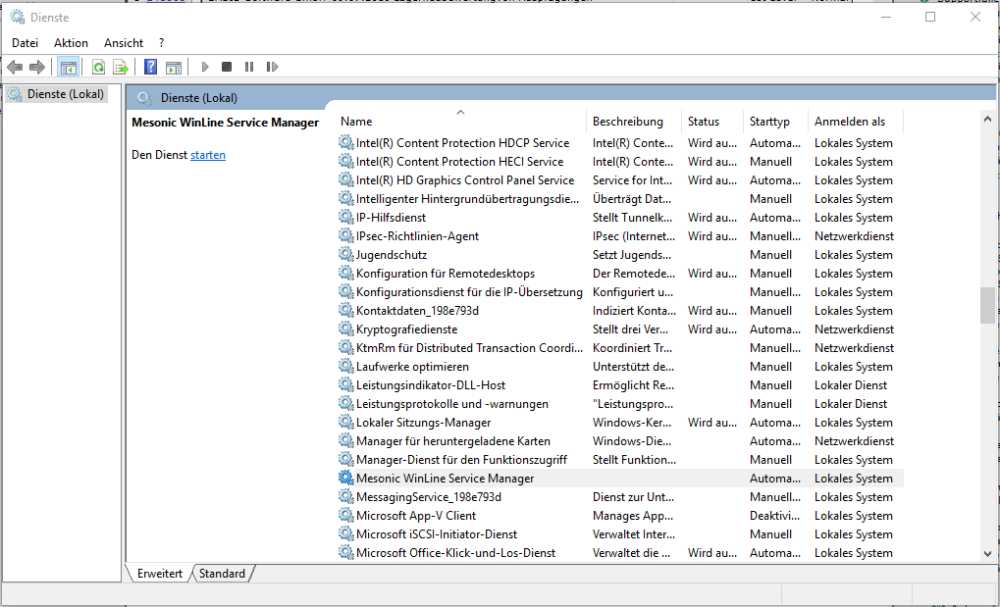
Das Icon wird mit dem Status "online" bzw. "offline" angezeigt.
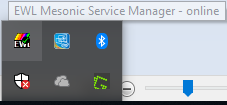
Während des Start- bzw. Stoppvorgangs wird das Tray-Icon ebenfalls aktualisiert.
Mesonic WinLine System Server Service Manager Dienst
Um den Serverdienst des WinLine System Servers zu starten bzw. zu stoppen kann ebenfalls der "Mesonic WinLine Service Manager" verwendet werden. Dieser muss durch Ausführen der Datei "mesosvcwnd.exe" mit dem Parameter "--systemserver" gestartet werden. Dadurch wird das "Mesonic WinLine Service Manager"-Symbol im Tray angezeigt.
Achtung
Damit der WinLine Server über dieses Tray Icon gestartet werden kann ist es notwendig, dass der Dienst "Mesonic WinLine System Server Service Manager" vorhanden bzw. installiert ist.
Durch Anwählen des "EWLMesonic Service Manager"-Symbols mit der rechten Maustaste kann der WinLine System Server (sowie der Mesonic WinLine System Server Service Manager Dienst) gestartet bzw. beendet werden, oder es können die Server Infos angezeigt werden:
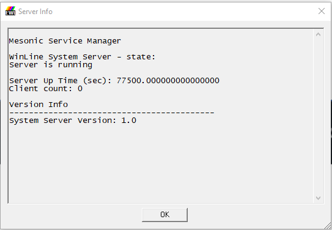
Ø
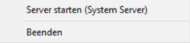
Server starten (System Server)Mit diesem Eintrag wird der Mesonic WinLine System Server inkl. Mesonic WinLine System Server Service Manager gestartet.
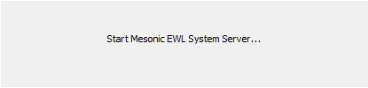
Ø
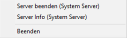
Server beenden (System Server)Durch Anwählen dieses Eintrages wird der Mesonic WinLine System Server inkl. zugehörigem Dienst (Mesonic WinLine System Server Service Manager) beendet. D.h. nicht nur der WinLine System Server wird dabei gestoppt, sondern es wird immer der Service mit gestartet bzw. gestoppt, der automatisch den EWL Server startet.
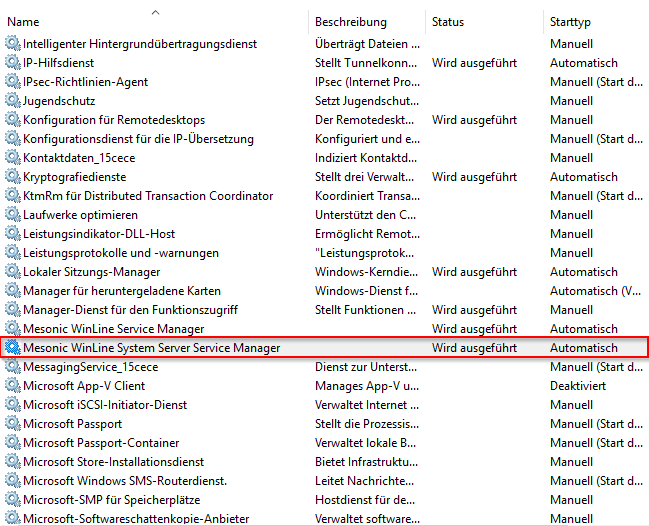
Das Icon wird mit dem Status "online" bzw. "offline" angezeigt.
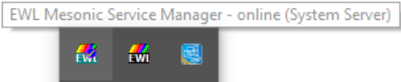